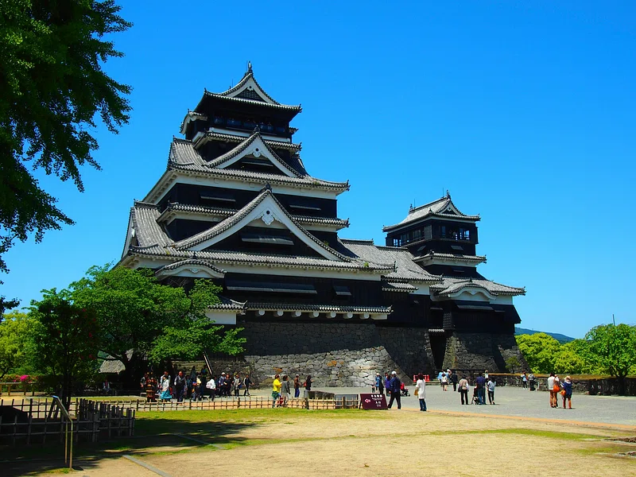
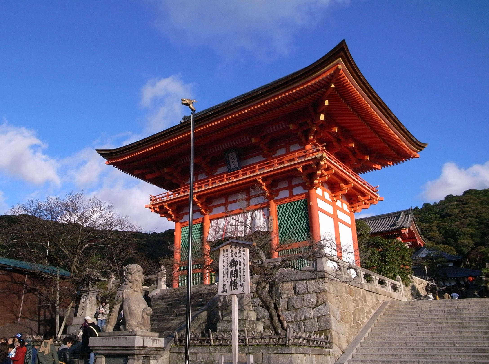
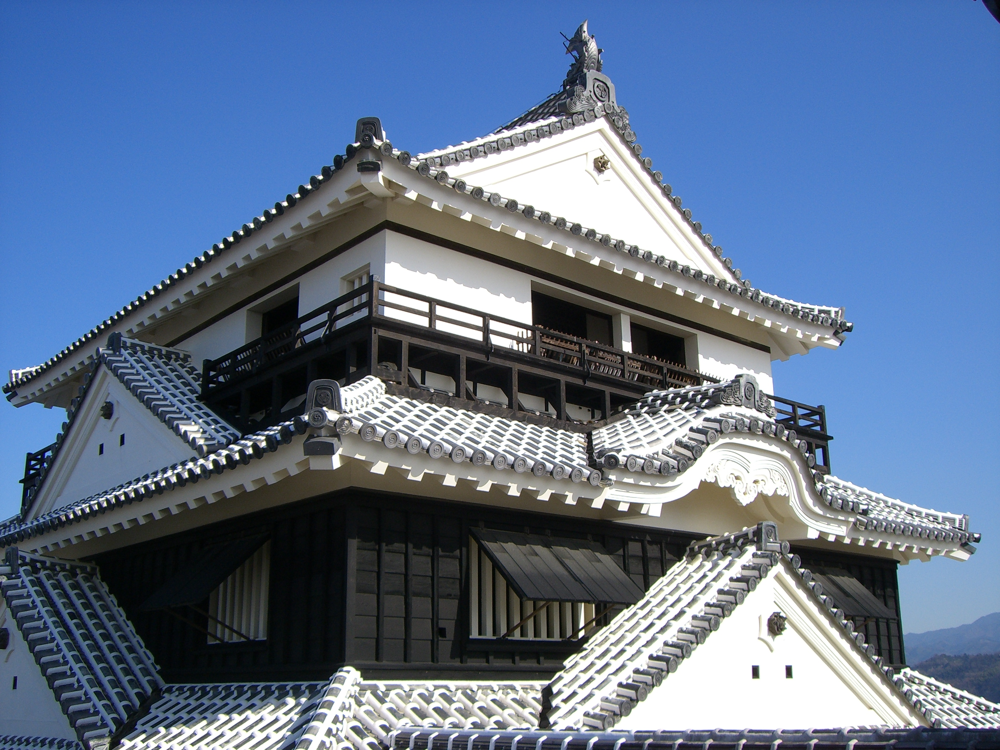

Tsuruga
El castillo de Tsuruga es un castillo japonés situado en la ciudad de Tsuruga, en la prefectura de Fukui, Japón. Fue construido en 1576 por Sassa Narimasa, un vasallo de Oda Nobunaga, y fue considerado uno de los castillos más importantes de la región de Hokuriku. El castillo de Tsuruga fue destruido en 1577 por el clan Asakura, pero fue reconstruido en 1597 por el clan Todo, que gobernó la región de Tsuruga durante el período Edo. El castillo fue destruido de nuevo en 1872 durante la Restauración Meiji, y la actual reconstrucción fue completada en 1981.
Higashiyama
El castillo de Higashiyama es un castillo japonés situado en la ciudad de Nagaoka, en la prefectura de Niigata, Japón. Fue construido en 1626 por el clan Makino, un vasallo de los Uesugi, y fue considerado uno de los castillos más importantes de la región de Hokuriku. El castillo de Higashiyama fue destruido en 1868 durante la Guerra Boshin, y la actual reconstrucción fue completada en 1988.
Matsuyama
El castillo de Matsuyama es un castillo japonés situado en la ciudad de Matsuyama, en la prefectura de Ehime, Japón. Fue construido en 1603 por Kato Yoshiaki, un vasallo de Toyotomi Hideyoshi, y fue considerado uno de los castillos más importantes de la región de Sh
